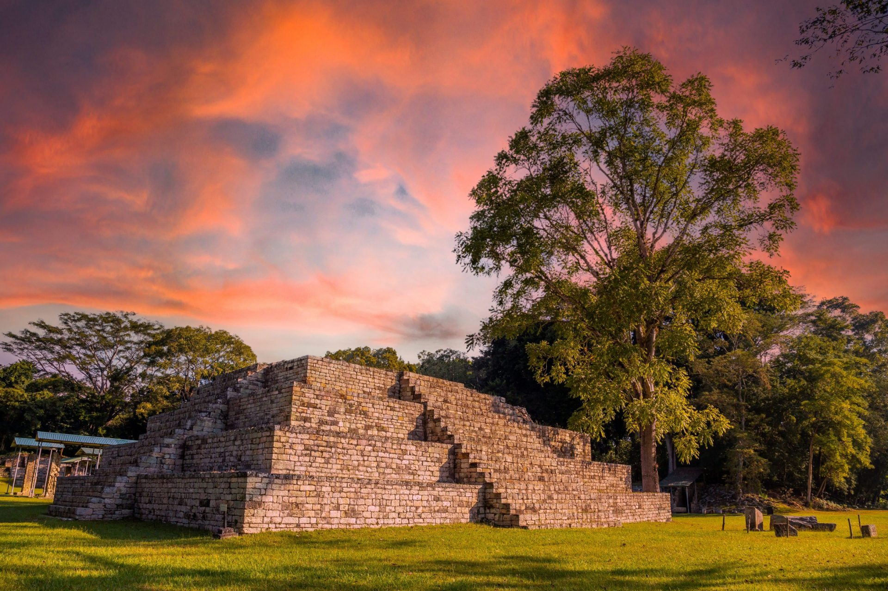

El lugar donde nuestra hisroria nunca muere

Copan ruinas es un lugar turistico muy famoso en el territorio hondureño en el que se conmemora nuestra historia a partir de poder explorar junto a un guia verdaderas estructuras mayas, dejandonos conocer el legado de nuestros ancestros y la cultura que estos seguian mientras disfrutaban de sus vidas antes de la colonizacion que sufrieron por parte de españa.
Ruinas Copan, Copan